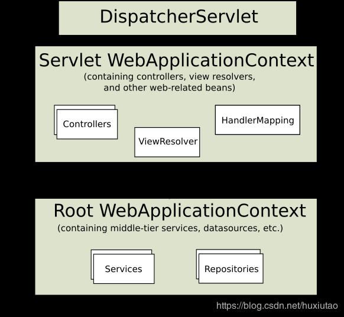

Tomcat对Servlet规范的支持说明 Servlet 3.0标准的官方说明文件
一、Servlet3.0 我们可以知道，Servlet 3.0提供了两个非常重要的功能：
我们总结为以下两点：
第一点：
第二点：
总结 ：容器在启动应用的时候，会扫描当前应用每一个jar包里面META-INF/services/javax.servlet.ServletContainerInitializer，指定的实现类，启动并运行这个实现类的方法；利用@HandlesTypes传入感兴趣的类型；
Demo示例：
创建web项目后（要选择3.0），在src目录下创建META-INF/services/并新建文件：javax.servlet.ServletContainerInitializer
新建HelloService接口，HelloService接口的实现类HelloServiceImpl、实现了HelloService的抽象类AbstractHelloService、实现了HelloService的接口HelloServiceExt。
1 2 3 public class HelloServiceImpl implements HelloService }
1 2 3 public abstract class AbstractHelloService implements HelloService }
1 2 3 public interface HelloServiceExt extends HelloService }
新建ServletContainerInitializer实现类：
1 2 3 4 5 6 7 8 9 10 11 12 13 14 15 16 17 18 19 20 21 22 23 24 25 26 27 28 29 30 31 32 33 34 35 36 37 38 39 40 41 42 @HandlesTypes (value={HelloService.class})public class MyServletContainerInitializer implements ServletContainerInitializer @Override public void onStartup (Set<Class<?>> arg0, ServletContext sc) throws ServletException System.out.println("感兴趣的类型：" ); for (Class<?> claz : arg0) { System.out.println(claz); } ServletRegistration.Dynamic servlet = sc.addServlet("userServlet" , new UserServlet()); servlet.addMapping("/user" ); sc.addListener(UserListener.class); FilterRegistration.Dynamic filter = sc.addFilter("userFilter" , UserFilter.class); filter.addMappingForUrlPatterns(EnumSet.of(DispatcherType.REQUEST), true , "/*" ); } }
控制台输出：
1 2 3 4 5 6 7 8 感兴趣的类型： class com.my.spring.annotation.service.AbstractHelloService interface com.my.spring.annotation.service.HelloServiceExt class com.my.spring.annotation.service.HelloServiceImpl UserListener...contextInitialized... ...... UserFilter...doFilter... UserFilter...doFilter...
Stop服务器后可以监听到，控制台：
1 2 信息: Stopping service Catalina UserListener...contextDestroyed...
二、Servelet3.0与SpringMVC整合分析 利用注解进行整合时，主要解决的问题是：原来在web.xml中初始化的组件如何在注解版本加载。
这是下面讲解的主线，一定要抓住这个问题往下看，否则，看着看着很容易找不着北，甚至不知道在干什么。
1. 创建Maven项目，并导入依赖 1 2 3 4 5 6 7 8 9 10 11 12 13 14 15 16 17 18 19 20 21 22 23 24 25 26 27 28 29 30 31 32 33 34 35 36 37 38 39 40 41 42 43 <project xmlns ="http://maven.apache.org/POM/4.0.0" xmlns:xsi ="http://www.w3.org/2001/XMLSchema-instance" xsi:schemaLocation ="http://maven.apache.org/POM/4.0.0 http://maven.apache.org/xsd/maven-4.0.0.xsd" > <modelVersion > 4.0.0</modelVersion > <groupId > com.my.springmvc.annotation</groupId > <artifactId > 02-SpringmvcAnnotation</artifactId > <version > 0.0.1-SNAPSHOT</version > <packaging > war</packaging > <properties > <maven.compiler.source > 1.8</maven.compiler.source > <maven.compiler.target > 1.8</maven.compiler.target > <maven.compiler.compilerVersion > 1.8</maven.compiler.compilerVersion > <webVersion > 3.0</webVersion > </properties > <dependencies > <dependency > <groupId > org.springframework</groupId > <artifactId > spring-webmvc</artifactId > <version > 4.3.11.RELEASE</version > </dependency > <dependency > <groupId > javax.servlet</groupId > <artifactId > servlet-api</artifactId > <version > 3.0-alpha-1</version > <scope > provided</scope > </dependency > </dependencies > <build > <plugins > <plugin > <groupId > org.apache.maven.plugins</groupId > <artifactId > maven-war-plugin</artifactId > <version > 2.4</version > <configuration > <failOnMissingWebXml > false</failOnMissingWebXml > </configuration > </plugin > </plugins > </build > </project >
2. 应用启动说明 可以打开依赖包spring-web-xxx.RELEASE.jar下的META-INF/services/javax.servlet.ServletContainerInitializer看一下
web容器在启动的时候，会扫描每个jar包下的META-INF/services/javax.servlet.ServletContainerInitializer
加载这个文件指定的类SpringServletContainerInitializer
1 2 3 4 5 6 7 8 9 10 11 12 13 14 15 16 17 18 19 20 21 22 23 24 25 26 27 28 29 30 31 32 33 34 35 36 37 38 39 40 @HandlesTypes (WebApplicationInitializer.class)public class SpringServletContainerInitializer implements ServletContainerInitializer @Override public void onStartup (Set<Class<?>> webAppInitializerClasses, ServletContext servletContext) throws ServletException { List<WebApplicationInitializer> initializers = new LinkedList<WebApplicationInitializer>(); if (webAppInitializerClasses != null ) { for (Class<?> waiClass : webAppInitializerClasses) { if (!waiClass.isInterface() && !Modifier.isAbstract(waiClass.getModifiers()) && WebApplicationInitializer.class.isAssignableFrom(waiClass)) { try { initializers.add((WebApplicationInitializer) waiClass.newInstance()); } catch (Throwable ex) { throw new ServletException("Failed to instantiate WebApplicationInitializer class" , ex); } } } } if (initializers.isEmpty()) { servletContext.log("No Spring WebApplicationInitializer types detected on classpath" ); return ; } servletContext.log(initializers.size() + " Spring WebApplicationInitializers detected on classpath" ); AnnotationAwareOrderComparator.sort(initializers); for (WebApplicationInitializer initializer : initializers) { initializer.onStartup(servletContext); } } }
spring的应用一启动会加载感兴趣的WebApplicationInitializer接口的下的所有组件；
并且为WebApplicationInitializer组件创建对象（组件不是接口，不是抽象类）
Servlet 3.0与SpringMVC整合原理总结：
以注解方式来启动SpringMVC；只需要继承AbstractAnnotationConfigDispatcherServletInitializer；，并且要实现抽象方法指定DispatcherServlet的配置信息。（会自动将创建的DispatcherServlet添加到ServletContext中；）
三、Servelet3.0与SpringMVC整合 Spring官方推荐，两个父子容器的形式：

Coding：
新建AbstractAnnotationConfigDispatcherServletInitializer 的子类 MyWebAppInitializer
1 2 3 4 5 6 7 8 9 10 11 12 13 14 15 16 17 18 19 20 21 22 23 24 25 26 27 28 29 30 31 32 33 34 package com.my.springmvc.annotation;import org.springframework.web.servlet.support.AbstractAnnotationConfigDispatcherServletInitializer;import com.my.springmvc.annotation.config.AppConfig;import com.my.springmvc.annotation.config.RootConfig;public class MyWebAppInitializer extends AbstractAnnotationConfigDispatcherServletInitializer @Override protected Class<?>[] getRootConfigClasses() { return new Class<?>[]{RootConfig.class}; } @Override protected Class<?>[] getServletConfigClasses() { return new Class<?>[]{AppConfig.class}; } @Override protected String[] getServletMappings() { return new String[]{"/" }; } }
创建根容器(父容器)和子容器的配置类：RootConfig和AppConfig
1 2 3 4 5 6 7 8 9 10 11 12 13 14 package com.my.springmvc.annotation.config;import org.springframework.context.annotation.ComponentScan;import org.springframework.context.annotation.ComponentScan.Filter;import org.springframework.context.annotation.FilterType;import org.springframework.stereotype.Controller;@ComponentScan (value="com.my.spring.annotation" ,excludeFilters={ @Filter (type=FilterType.ANNOTATION,classes={Controller.class}) }) public class RootConfig }
1 2 3 4 5 6 7 8 9 10 11 12 13 14 15 16 17 18 19 20 21 22 23 24 25 26 27 28 29 30 31 32 33 34 35 36 37 38 39 40 41 42 43 44 45 46 47 48 49 package com.my.springmvc.annotation.config;import org.springframework.context.annotation.ComponentScan;import org.springframework.context.annotation.ComponentScan.Filter;import org.springframework.context.annotation.FilterType;import org.springframework.stereotype.Controller;import org.springframework.web.servlet.config.annotation.DefaultServletHandlerConfigurer;import org.springframework.web.servlet.config.annotation.EnableWebMvc;import org.springframework.web.servlet.config.annotation.InterceptorRegistry;import org.springframework.web.servlet.config.annotation.ViewResolverRegistry;import org.springframework.web.servlet.config.annotation.WebMvcConfigurerAdapter;import com.my.springmvc.annotation.controller.MyFirstInterceptor;@ComponentScan (value="com.my.spring.annotation" ,includeFilters={ @Filter (type=FilterType.ANNOTATION,classes={Controller.class}) },useDefaultFilters=false ) @EnableWebMvc public class AppConfig extends WebMvcConfigurerAdapter @Override public void configureViewResolvers (ViewResolverRegistry registry) registry.jsp("/WEB-INF/views/" , ".jsp" ); } @Override public void configureDefaultServletHandling (DefaultServletHandlerConfigurer configurer) configurer.enable(); } @Override public void addInterceptors (InterceptorRegistry registry) registry.addInterceptor(new MyFirstInterceptor()).addPathPatterns("/**" ); } }
测试用到的Controller：HelloController
1 2 3 4 5 6 7 8 9 10 11 12 13 14 15 16 17 18 19 20 21 22 23 24 25 26 27 28 29 package com.my.springmvc.annotation.controller;import org.springframework.beans.factory.annotation.Autowired;import org.springframework.stereotype.Controller;import org.springframework.web.bind.annotation.RequestMapping;import org.springframework.web.bind.annotation.ResponseBody;import com.my.springmvc.annotation.service.HelloService;@Controller public class HelloController @Autowired HelloService helloService; @ResponseBody @RequestMapping ("/hello" ) public String hello () String hello = helloService.sayHello("tomcat.." ); return hello; } @RequestMapping ("/suc" ) public String success () return "success" ; } }
测试用的Service：HelloService
1 2 3 4 5 6 7 8 9 10 11 12 13 package com.my.springmvc.annotation.service;import org.springframework.stereotype.Service;@Service public class HelloService public String sayHello (String name) return "Hello " +name; } }
运行测试
四、定制与接管SpringMVC 原来会将所有的配置定义在web.xml文件中，如果用注解定制与接管SpringMVC则分两步：
@EnableWebMvc:开启SpringMVC定制配置功能；
1 2 3 4 5 6 7 8 9 10 11 12 13 14 15 16 17 18 19 20 21 22 23 24 25 1.11 .1. Enable MVC ConfigSame in Spring WebFlux In Java config use the @EnableWebMvc annotation: @Configuration @EnableWebMvc public class WebConfig } In XML use the <mvc:annotation-driven> element: <?xml version="1.0" encoding="UTF-8" ?> <beans xmlns="http://www.springframework.org/schema/beans" xmlns:mvc="http://www.springframework.org/schema/mvc" xmlns:xsi="http://www.w3.org/2001/XMLSchema-instance" xsi:schemaLocation=" http://www.springframework.org/schema/beans http://www.springframework.org/schema/beans/spring-beans.xsd http://www.springframework.org/schema/mvc http://www.springframework.org/schema/mvc/spring-mvc.xsd" > <mvc:annotation-driven/> </beans> The above registers a number of Spring MVC infrastructure beans also adapting to dependencies available on the classpath: e.g. payload converters for JSON, XML, etc.
在官网上每一个注解都会有相应的解释和例子。
配置组件（视图解析器、视图映射、静态资源映射、拦截器……）In Java config implement WebMvcConfigurer interface:
1 2 3 4 5 6 7 8 9 10 11 12 13 14 15 16 17 18 19 20 21 22 23 24 25 26 27 28 29 30 31 32 33 34 35 36 37 38 39 40 41 42 43 44 45 46 47 48 49 50 51 52 53 54 55 56 57 58 59 60 61 62 63 64 65 66 67 68 69 70 71 72 73 74 75 76 77 78 79 80 81 82 83 84 85 86 87 88 89 90 91 92 93 94 95 96 97 98 99 100 101 102 103 104 105 106 107 108 109 110 111 public class RootConfig implements WebMvcConfigurer @Override public void configurePathMatch (PathMatchConfigurer configurer) } @Override public void configureContentNegotiation (ContentNegotiationConfigurer configurer) } @Override public void configureAsyncSupport (AsyncSupportConfigurer configurer) } @Override public void configureDefaultServletHandling (DefaultServletHandlerConfigurer configurer) } @Override public void addFormatters (FormatterRegistry registry) } @Override public void addInterceptors (InterceptorRegistry registry) } @Override public void addResourceHandlers (ResourceHandlerRegistry registry) } @Override public void addCorsMappings (CorsRegistry registry) } @Override public void addViewControllers (ViewControllerRegistry registry) } @Override public void configureViewResolvers (ViewResolverRegistry registry) } @Override public void addArgumentResolvers (List<HandlerMethodArgumentResolver> argumentResolvers) } @Override public void addReturnValueHandlers (List<HandlerMethodReturnValueHandler> returnValueHandlers) } @Override public void configureMessageConverters (List<HttpMessageConverter<?>> converters) } @Override public void extendMessageConverters (List<HttpMessageConverter<?>> converters) } @Override public void configureHandlerExceptionResolvers (List<HandlerExceptionResolver> exceptionResolvers) } @Override public void extendHandlerExceptionResolvers (List<HandlerExceptionResolver> exceptionResolvers) } @Override public Validator getValidator () return null ; } @Override public MessageCodesResolver getMessageCodesResolver () return null ; } }
可以看到如果是实现WebMvcConfigurer接口，则需要实现的方法太多，但是我们一般用不了这些方法，所以，可以继承WebMvcConfigurer的一个抽象类WebMvcConfigurerAdapter，这个抽象类已经实现了这些所有的方法（空的而已），所以，我们就可以有目的的进行定制。
1 2 3 4 5 6 7 8 9 10 11 12 13 14 15 16 17 18 19 20 21 22 23 24 25 26 27 28 29 30 31 32 33 34 35 @ComponentScan (value="com.my.spring.annotation" ,includeFilters={ @Filter (type=FilterType.ANNOTATION,classes={Controller.class}) },useDefaultFilters=false ) @EnableWebMvc public class AppConfig extends WebMvcConfigurerAdapter @Override public void configureViewResolvers (ViewResolverRegistry registry) registry.jsp("/WEB-INF/views/" , ".jsp" ); } @Override public void configureDefaultServletHandling (DefaultServletHandlerConfigurer configurer) configurer.enable(); } @Override public void addInterceptors (InterceptorRegistry registry) registry.addInterceptor(new MyFirstInterceptor()).addPathPatterns("/**" ); } }
上面定制化中用到的拦截器定义如下MyFirstInterceptor：
1 2 3 4 5 6 7 8 9 10 11 12 13 14 15 16 17 18 19 20 21 22 23 24 25 26 27 28 29 public class MyFirstInterceptor implements HandlerInterceptor @Override public boolean preHandle (HttpServletRequest request, HttpServletResponse response, Object handler) throws Exception { System.out.println("preHandle..." +request.getRequestURI()); return true ; } @Override public void postHandle (HttpServletRequest request, HttpServletResponse response, Object handler, ModelAndView modelAndView) throws Exception System.out.println("postHandle..." ); } @Override public void afterCompletion (HttpServletRequest request, HttpServletResponse response, Object handler, Exception ex) throws Exception { System.out.println("afterCompletion..." ); } }
更多的定制方法可以参考官网：https://docs.spring.io/spring/docs/5.0.12.RELEASE/spring-framework-reference/web.html#mvc-config 其中1.11 MVC Config章节有对每个组件的详细说明。（调用什么方法，相当于之前的什么写法）
五、Servelet3.0与SpringMVC整合——异步请求 1. servlet 3.0另外一个重大的更新功能是异步请求 在Servlet 3.0之前，Servlet采用Thread-Per-Request的方式处理请求。
如果一个请求需要进行IO操作，比如访问数据库、调用第三方服务接口等，那么其所对应的线程将同步地等待IO操作完成， 而IO操作是非常慢的，所以此时的线程并不能及时地释放回线程池以供后续使用，在并发量越来越大的情况下，这将带来严重的性能问题。即便是像Spring、Struts这样的高层框架也脱离不了这样的桎梏，因为他们都是建立在Servlet之上的。为了解决这样的问题，Servlet 3.0引入了异步处理，然后在Servlet 3.1中又引入了非阻塞IO来进一步增强异步处理的性能。
配置步骤：
支持异步处理asyncSupported=true
1 @WebServlet (value="/async" ,asyncSupported=true )
开启异步模式
1 AsyncContext startAsync = req.startAsync();
startAsync 可以设置异步请求的监听器、异步处理的超时时间等等。
业务逻辑进行异步处理;开始异步处理
在start方法中的run方法中获取相应
1 2 3 4 5 6 7 8 9 10 11 12 13 14 15 16 17 startAsync.start(new Runnable() { @Override public void run () try { System.out.println("副线程开始。。。" +Thread.currentThread()+"==>" +System.currentTimeMillis()); sayHello(); startAsync.complete(); AsyncContext asyncContext = req.getAsyncContext(); ServletResponse response = asyncContext.getResponse(); response.getWriter().write("hello async..." ); System.out.println("副线程结束。。。" +Thread.currentThread()+"==>" +System.currentTimeMillis()); } catch (Exception e) { } } });
完整的异步Servlet代码：
1 2 3 4 5 6 7 8 9 10 11 12 13 14 15 16 17 18 19 20 21 22 23 24 25 26 27 28 29 30 31 32 33 34 35 36 37 38 39 40 41 42 43 44 45 46 import java.io.IOException;import javax.servlet.AsyncContext;import javax.servlet.ServletException;import javax.servlet.ServletResponse;import javax.servlet.annotation.WebServlet;import javax.servlet.http.HttpServlet;import javax.servlet.http.HttpServletRequest;import javax.servlet.http.HttpServletResponse;@WebServlet (value="/async" ,asyncSupported=true )public class HelloAsyncServlet extends HttpServlet @Override protected void doGet (HttpServletRequest req, HttpServletResponse resp) throws ServletException, IOException System.out.println("主线程开始。。。" +Thread.currentThread()+"==>" +System.currentTimeMillis()); AsyncContext startAsync = req.startAsync(); startAsync.start(new Runnable() { @Override public void run () try { System.out.println("副线程开始。。。" +Thread.currentThread()+"==>" +System.currentTimeMillis()); sayHello(); startAsync.complete(); AsyncContext asyncContext = req.getAsyncContext(); ServletResponse response = asyncContext.getResponse(); response.getWriter().write("hello async..." ); System.out.println("副线程结束。。。" +Thread.currentThread()+"==>" +System.currentTimeMillis()); } catch (Exception e) { } } }); System.out.println("主线程结束。。。" +Thread.currentThread()+"==>" +System.currentTimeMillis()); } public void sayHello () throws Exception System.out.println(Thread.currentThread()+" processing..." ); Thread.sleep(3000 ); } }
控制台输出：
1 2 3 4 5 6 7 8 9 主线程开始。。。Thread[http-nio-8080-exec-2,5,main]==>1548248108792 主线程结束。。。Thread[http-nio-8080-exec-2,5,main]==>1548248108796 副线程开始。。。Thread[http-nio-8080-exec-3,5,main]==>1548248108796 Thread[http-nio-8080-exec-3,5,main] processing... UserFilter...doFilter... 主线程开始。。。Thread[http-nio-8080-exec-5,5,main]==>1548248112056 主线程结束。。。Thread[http-nio-8080-exec-5,5,main]==>1548248112056 副线程开始。。。Thread[http-nio-8080-exec-6,5,main]==>1548248112056 Thread[http-nio-8080-exec-6,5,main] processing...
2. Springmvc整合servlet 3.0异步请求功能 Springmvc官网的Async Request说明
1 2 3 4 5 6 7 8 9 10 11 12 13 14 15 16 17 18 19 20 21 22 23 24 25 26 27 28 29 30 31 Here is a very concise overview of Servlet asynchronous request processing: A ServletRequest can be put in asynchronous mode by calling request.startAsync(). The main effect of doing so is that the Servlet, as well as any Filters, can exit but the response will remain open to allow processing to complete later. The call to request.startAsync() returns AsyncContext which can be used for further control over async processing. For example it provides the method dispatch, that is similar to a forward from the Servlet API except it allows an application to resume request processing on a Servlet container thread. The ServletRequest provides access to the current DispatcherType that can be used to distinguish between processing the initial request, an async dispatch, a forward, and other dispatcher types. DeferredResult processing: Controller returns a DeferredResult and saves it in some in-memory queue or list where it can be accessed. Spring MVC calls request.startAsync(). Meanwhile the DispatcherServlet and all configured Filter’s exit the request processing thread but the response remains open. The application sets the DeferredResult from some thread and Spring MVC dispatches the request back to the Servlet container. The DispatcherServlet is invoked again and processing resumes with the asynchronously produced return value. Callable processing: Controller returns a Callable. Spring MVC calls request.startAsync() and submits the Callable to a TaskExecutor for processing in a separate thread. Meanwhile the DispatcherServlet and all Filter’s exit the Servlet container thread but the response remains open. Eventually the Callable produces a result and Spring MVC dispatches the request back to the Servlet container to complete processing. The DispatcherServlet is invoked again and processing resumes with the asynchronously produced return value from the Callable.
上面英文的意思如下程序：
1 2 3 4 5 6 7 8 9 10 11 12 13 14 15 16 17 18 19 20 21 22 23 24 25 26 27 28 29 30 31 32 33 34 35 36 37 38 39 40 41 42 43 44 45 46 47 48 49 50 51 52 53 54 55 56 57 58 59 60 61 62 63 64 65 66 67 68 69 70 71 72 @Controller public class AsyncController @ResponseBody @RequestMapping ("/createOrder" ) public DeferredResult<Object> createOrder () DeferredResult<Object> deferredResult = new DeferredResult<>((long )3000 , "create fail..." ); DeferredResultQueue.save(deferredResult); return deferredResult; } @ResponseBody @RequestMapping ("/create" ) public String create () String order = UUID.randomUUID().toString(); DeferredResult<Object> deferredResult = DeferredResultQueue.get(); deferredResult.setResult(order); return "success===>" +order; } @ResponseBody @RequestMapping ("/async01" ) public Callable<String> async01 () System.out.println("主线程开始..." +Thread.currentThread()+"==>" +System.currentTimeMillis()); Callable<String> callable = new Callable<String>() { @Override public String call () throws Exception System.out.println("副线程开始..." +Thread.currentThread()+"==>" +System.currentTimeMillis()); Thread.sleep(2000 ); System.out.println("副线程开始..." +Thread.currentThread()+"==>" +System.currentTimeMillis()); return "Callable<String> async01()" ; } }; System.out.println("主线程结束..." +Thread.currentThread()+"==>" +System.currentTimeMillis()); return callable; } }
总结：
返回Callable：
1 2 3 4 5 6 7 8 9 10 11 12 13 14 A controller may also wrap any supported return value with java.util.concurrent.Callable: @PostMapping public Callable<String> processUpload (final MultipartFile file) return new Callable<String>() { public String call () throws Exception return "someView" ; } }; } The return value will then be obtained by executing the the given task through the configured TaskExecutor.
在实际的开发中，一般不会像返回Callable这么简单，一般都会用到返回DeferredResult。
返回DeferredResult
1 2 3 4 5 6 7 8 9 10 11 12 13 Once the asynchronous request processing feature is enabled in the Servlet container, controller methods can wrap any supported controller method return value with DeferredResult: @GetMapping ("/quotes" )@ResponseBody public DeferredResult<String> quotes () DeferredResult<String> deferredResult = new DeferredResult<String>(); return deferredResult; } deferredResult.setResult(data); The controller can produce the return value asynchronously, from a different thread, for example in response to an external event (JMS message) , a scheduled task, or other.
上面官网的意思是：当请求不能得到及时响应时，先new DeferredResult();并立刻返回，并把这个对象保存到其他的地方。另外一个线程拿到这个对象后，进行真正的处理，处理完成后，通过调用setResult(data)方法，将结果响应出去。